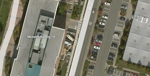
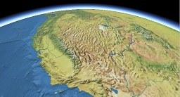

Analytical Graphics, Inc.
Analytical Graphics, Inc.
Imagery specifies the color and shading of the surface of the globe.
Cesium supports a wide variety of standard imagery formats and servers, not just the few tilesets shown here. See the Imagery Layers Tutorial for information about hooking up Cesium to your imagery data.
| Imagery | Description | Provider | |
|  | Bing Maps | Very high resolution, global imagery, including sub-meter resolution imagery in some parts of the world. Various options for free use on the Internet are available. This is the default imagery used in most Cesium applications. |
|
|
Black Marble | Medium-resolution tileset created from the NASA Earth Observatory's Black Marble images, showing the Earth at night. |
Analytical Graphics, Inc. |
|  | Natural Earth II | This is a higher-resolution version of the Natural Earth II tileset that is included in Cesium itself. It was created from the 1:10 million scale Natural Earth II Shaded Relief, Water, Drainages image. This imagery is most useful for applications where the viewer is in space, though some pixelation is noticeable when viewing from low-Earth oribit. |
Analytical Graphics, Inc. |
Images in the table above use imagery data Copyright © Microsoft Corporation, Nokia, AND, and NASA.
Want to have your imagery listed here? Fork cesium-assets-list, add your imagery, and open a pull request. We'll also promote your imagery on the Cesium forum, blog, and twitter.